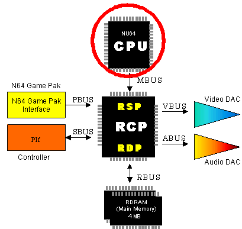

1.2.2 CPU (Central Processing Unit)
The N64 CPU is a very high-speed CPU with a clock speed of 93.75 MHz. Because an integer pipeline and a floating-point pipeline are shared, integer arithmetic and floating-point arithmetic are not processed simultaneously. However, floating-point arithmetic can be executed by the hardware.

CPU Features
The N64 CPU gives you all these features:
- Belongs to the R4000 family of processors
- Is more than 100 times the speed of NES
- Provides an execution unit that equips the 64-bit register file for integer or floating-point arithmetic.
- Provides a 16K-byte instruction cache on the CPU chip.
- Provides a data cache that uses an 8K-byte write-back system on the CPU chip.
- Provides a memory management unit that uses the high-speed translation lookaside buffer (TLB) to convert virtual addresses to physical addresses.
TLB (Translation Lookaside Buffer)
- This is a register for mapping virtual addresses to physical addresses.
- The TLB has 32 entries. Each entry maps a virtual address onto the page of two physical addresses.
- Page addresses are variable and can be set independently in each entry.
CPU Specifications
Following are the N64 CPU specifications:
- system clock is 93.75 MHz
- bus width is 64 bits
- instruction cache is 16K bytes
- data cache is 8K bytes
Nintendo® Confidential
Copyright © 1999
Nintendo of America Inc. All Rights Reserved
Nintendo and N64 are registered trademarks of Nintendo
Last Updated March, 1999